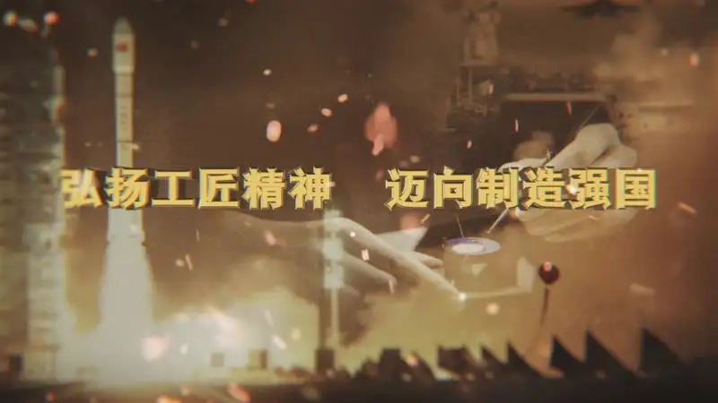

传承工匠精神 争当技能人才
一、在传承敬业报国、精益求精的工匠精神上，青年一代是未来的主力军，被寄予了殷殷期待。在如今这个变化万千的时代，很少有人能够安静下来，持之以恒般做一件小事。但不论是微末之间的变化，还是宏大的社会政事变化，时代的车轮滚滚向前，在万千改变中总有一些东西历久弥新，它们经历了时间淬炼，散发出了更耀眼的光芒，那便是工匠精神。

二、大国工匠需要青年力量。奔涌的“后浪”们头脑更加灵活、思维更加发散、发展潜力更大，为新时代技能人才队伍注入了新活力。在天文追星、嫦娥揽月、北斗组网、蛟龙潜海、量子通信等一系列科创新高度中，大至月球车的电机，小至火星探测器的齿轮，皆是出自我国工匠之手，其中就不乏85后和95后。
三、“择一事、终一生”，工匠精神不应该只是匠人身上的奢侈品，更应该成为各行各业所追求职业品格。工匠精神引领企业发展，要么不做，要么就发挥全部的力量，做到最好。把简单的事情重复做，把重复的事情精致做，每一个步骤都精心、每一个环节都精细、每一项成果都是精品，将工作做到极致、做出境界。尽管我们不必人人成为大国工匠，但人人可以成为工匠精神的践行者，在成就自己精彩人生的同时，为中国制造强筋健骨，为中国力量凝神铸魂。
四、“择一事、终一生”，工匠精神不应该只是匠人身上的奢侈品，更应该成为各行各业所追求职业品格。